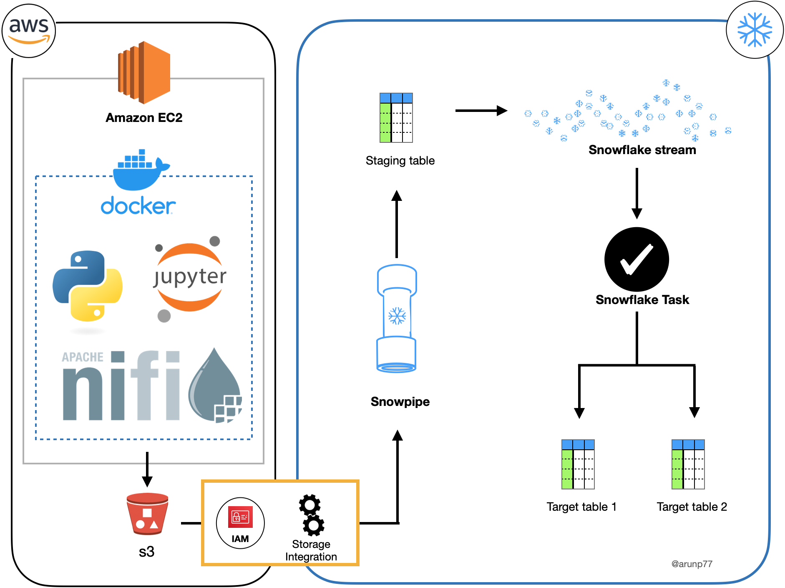

Automated Real-Time Data Streaming Pipeline using Apache Nifi, AWS, Snowpipe, Stream & Task
"Unlocking the Power of Real-Time Data in the Cloud"
Introduction
In this project, I embarked on an exciting adventure in data engineering. I orchestrated the real-time flow of data using a fusion of modern technologies,
aiming to build a smart system. This system not only generates random data but also swiftly sends it to an AWS S3 storage space. Then, it processes this data
instantly with Snowflake, all under the watchful eye of Apache Nifi, which acts as the conductor of this intricate data symphony.
Prerequisites
Before diving into the project, you'll need the following prerequisites:
Project overview
This project demonstrates my ability to design and implement a real-time data streaming pipeline using Apache Nifi, AWS, Snowpipe,
Stream, and Task. The pipeline continuously ingests data from a JupyterLab notebook, processes it using Apache Nifi, and loads it into a Snowflake
data warehouse. The pipeline is designed to handle both new data and updates to existing data.
Project Architecture
The architecture of our project involves several interconnected components:
- EC2 Instance: This serves as the foundation of the project, where we deploy our Docker container and essential tools.
- Docker Container: Housed within the EC2 instance, this container contains Python, Apache Nifi, and Apache ZooKeeper, ensuring a consistent and easily replicable environment.
- JupyterLab and Apache Nifi: These are the workstations for data engineers. JupyterLab is accessible at 'IP/4888,' and Apache Nifi is reachable at 'IP/2080' (where IP is the
EC2 machine IP).
- Data Generation: Using Python in JupyterLab, we utilized the 'Faker' library to create random data records, including customer information.
- Data Streaming to AWS S3: Apache Nifi was used to establish connections for transferring the generated data to an AWS S3 bucket, providing scalable storage and real-time access.
- Real-Time Data Processing with Snowflake: Leveraging Snowpipe, we ensured that any new data or changes in existing data were automatically incorporated into the dataset. Slowly changing dimensions were used to track these changes.
- Target Table Creation: A task was executed to create target tables, ensuring the final dataset was always up-to-date and accurate.

Project Setup
Let's dive into the details of the setup, like taking a closer look at the instruments in our orchestra:
- EC2 Instance Configuration:
I meticulously configured an AWS EC2 instance with 8GB RAM and 32GB memory space, choosing a t2.xlarge instance for optimal performance.
Ports 4000-38888 were opened, and SSH access was set up. This is where we set up our concert hall.
- Docker Container Setup: Within the EC2 instance, a Docker container was created and populated with Python, Apache Nifi, and Apache ZooKeeper.
Think of it as preparing our instruments, tuning them to perfection.
- JupyterLab and Apache Nifi Configuration: JupyterLab and Apache Nifi were configured to run on specific ports, making them accessible for data processing and orchestration.
It's like setting up the conductor's podium and the sheet music stand just right.
- Data Generation: In JupyterLab, Python code was crafted to generate random data, simulating customer information. This is where the composer writes the notes.
- Data Streaming: Apache Nifi was utilized to set up connections, ensuring the seamless transfer of generated data to an AWS S3 bucket. It's the conductor guiding the instruments.
- Real-Time Data Processing: Snowpipe, Snowflake streams, and tasks were set up to handle real-time data processing, enabling automatic updates as new data arrived.
It's the conductor guiding the orchestra to play in harmony.
Key Components
The key components are like our orchestra members:
- AWS EC2: The Stage Where the Symphony is Performed The AWS EC2 instance serves as the stage for our data symphony. Here's how
it was created and configured for the project:
- Creation: To set up an EC2 instance, I began by accessing the AWS Management Console and launched an EC2 instance.
I selected an instance type with 8GB of RAM and 32GB of memory space, specifically choosing a t2.xlarge instance for optimal performance.
- Storage and Security: In the process, I configured the instance with 32GB of storage, ensuring that there was sufficient space to store data and project components. Additionally, I created a security group that allowed incoming traffic on the
specified ports (4000-38888) and enabled SSH access for remote management.
- Connection: After launching the EC2 instance, I connected to it via SSH, providing a secure channel for executing commands and configuring the environment.
- Docker: The Instruments and Their Maintenance
Docker played a crucial role in maintaining the tools and dependencies used in the project. Here's how it was set up:
- Installation: To prepare the EC2 instance for Docker, I executed a series of commands:
sudo yum update -y
sudo yum install docker
Installing Docker Compose: I also installed Docker Compose to manage multi-container Docker applications.
This was achieved with the following commands:
sudo curl -L "https://github.com/docker/compose/releases/download/1.29.1/docker-compose-$(uname -s)-$(uname -m)" -o /usr/local/bin/docker-compose
sudo chmod +x /usr/local/bin/docker-compose
Adding User to Docker Group: To ensure that I had the necessary permissions to interact with Docker without using sudo,
I added my user to the Docker group and activated the changes with:
sudo gpasswd -a $USER docker
newgrp docker
Python and Docker Compose: For Docker Compose to function seamlessly, I installed Python and the required package:
sudo yum install python-pip
sudo pip install docker-compose
Apache Nifi: The Conductor
Apache Nifi was the conductor of our data symphony, orchestrating the flow of data. To set up Apache Nifi, I followed these steps:
- Download and Installation: I downloaded the Apache Nifi binary and installed it on the EC2 instance. This step usually
involves extracting the downloaded files and configuring the appropriate environment variables.
- Port Configuration: I ensured that Apache Nifi was accessible on port 'IP/2080,' where 'IP' represents the EC2 instance's IP address.
This step allowed for convenient interaction with Nifi.
The orchestration of these components is analogous to preparing an orchestra for a grand performance. The EC2 instance serves as the stage,
Docker maintains our instruments, and Apache Nifi conducts the symphony of data, guiding it through the intricacies of real-time processing and streaming.
Project Results
The project successfully achieved real-time data generation, streaming, and processing, showcasing the efficiency and scalability of the architecture.
It exemplified my proficiency in working with a diverse set of tools and technologies. Like any symphony, it was a harmonious blend of various elements,
each playing its role to create a beautiful performance.
Challenges Faced:
While the project was a resounding success, there were some challenges. It's like perfecting a complex musical piece. Challenges included optimizing data
processing pipelines for large datasets, ensuring the robustness of the real-time processing components, and maintaining the tempo of the data symphony.
These challenges were addressed through meticulous testing and fine-tuning, just like a composer refining a symphony.
Future Improvements
To further enhance this project, future improvements may include:
- Implementing data quality checks for ensuring data accuracy.
- Integrating machine learning models for more sophisticated data analysis.
- Automating deployment and scaling of the architecture for handling larger and more extensive data streams, much like a symphony growing in scale and grandeur.
This project is a testament to my expertise in data engineering and real-time data processing.
It's more than just a project; it's a data symphony, where diverse tools and technologies come together to create a harmonious and ever-evolving performance.